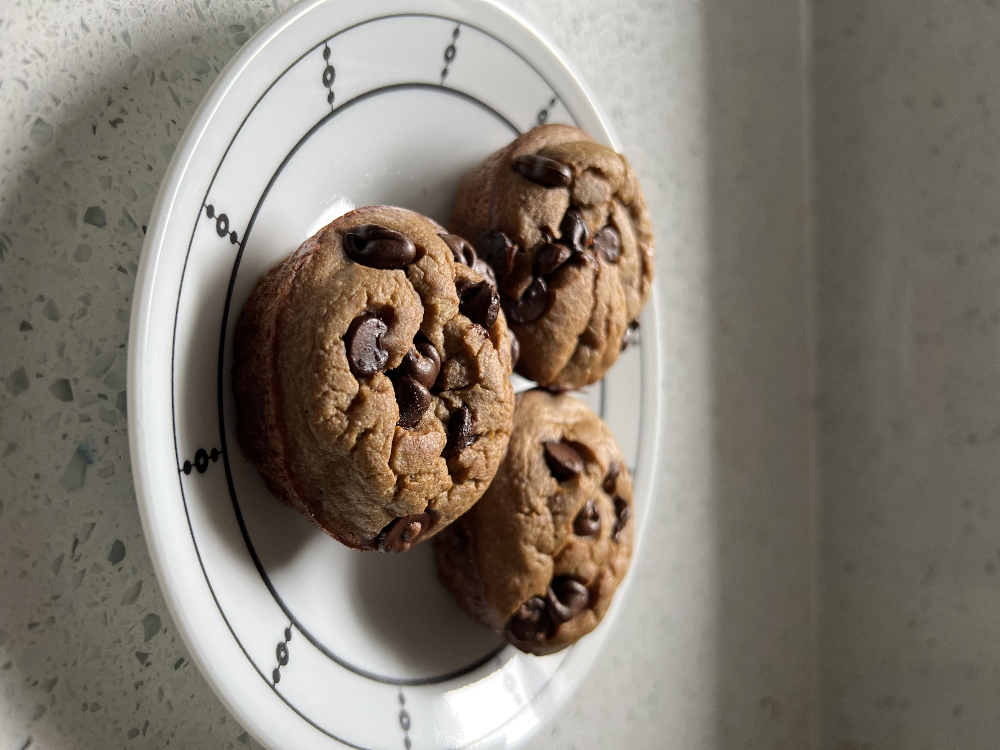

Quick and easy breakfast or snack.
Makes: 12 muffins
Ingredients
- 2 cups rolled oats
- 2 bananas
- 6 oz of yogurt or milk
- 1/3 cup maple syrup or honey
- 2 eggs
- 1 teaspoon baking soda
- 1 teaspoon cinnamon
- 1 teaspoon vanilla extract
- chocolate chips (optional)
Instructions
- Preheat oven to 375 degrees.
- Blend rolled oats together for 30 seconds to make oat flour.
- Add in the rest of the ingredients (except chocolate chips) and blend.
- Spray muffin tin with oil and then pour mixture into muffin tins.
- Add chocolate chips onto each muffin.
- Bake for 20-22 minutes. Let cool in pan for 5-10 minutes and then remove to cooling rack.
Website: Easy Banana Oatmeal Muffins